Blend
2015, Student Work
BACKGROUNDBlend is a collection of 12 smoothie recipes that are equally healthy, delicious, and easy to make at home. Smoothies are great to drink as a snack or along with your favorite meal, and they are a perfect way to add servings of fruits and vegetables to your diet. Each recipe in Blend was selected for its simple ingredient list, low sugar content, and its use of all natural fruits and vegetables; which can easily be found at your local grocery store.
OBJECTIVEThe primary goal for this recipe book was to combine inspiring photography with a minimalistic graphic layout for ease of use. I made all of the smoothies from scratch and took pictures of them myself, with some help from my talented friend Sein Kwon. Using only natural window lighting to mimic the environment in which they would be made. Each recipe page follows the same layout: directions are front and center, with ingredients floated to the left. At the bottom is an 'additional notes' section with alternative ingredient and preparation suggestions to encourage the user to experiment with the recipes and make them their own.
 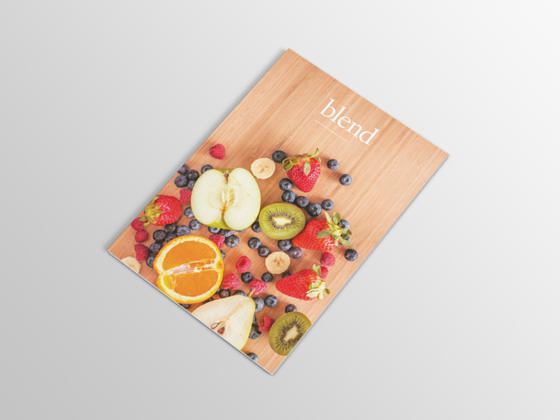
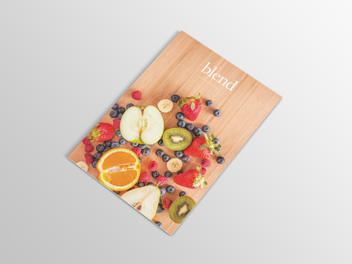
 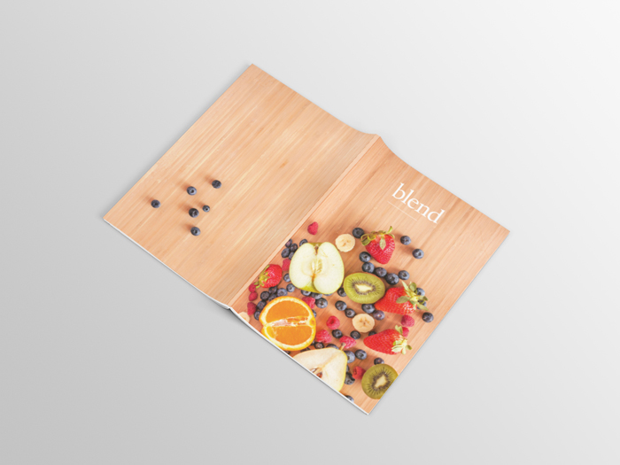
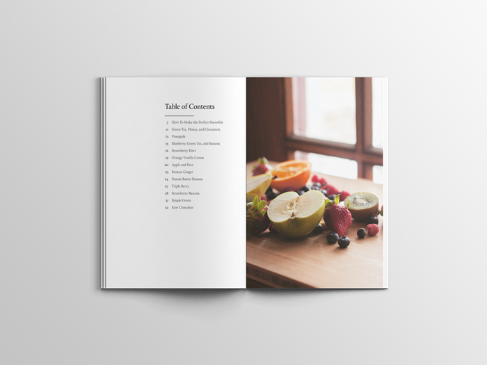
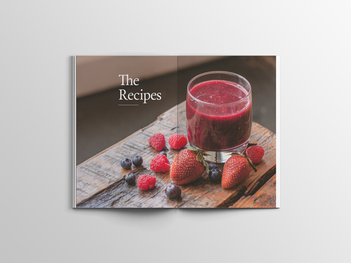
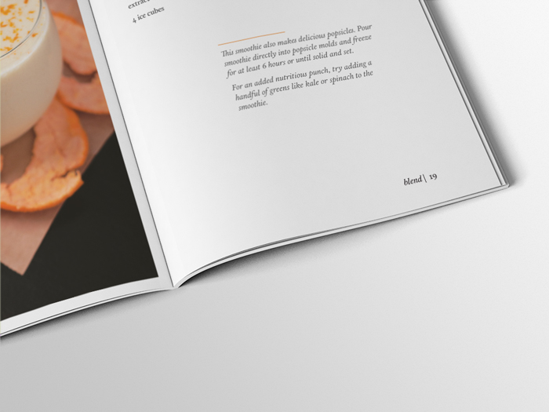
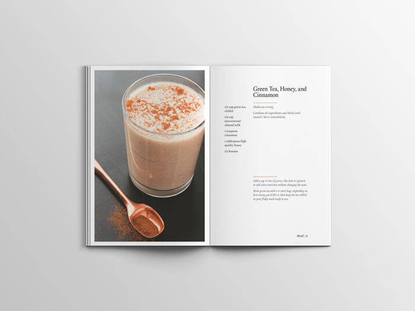
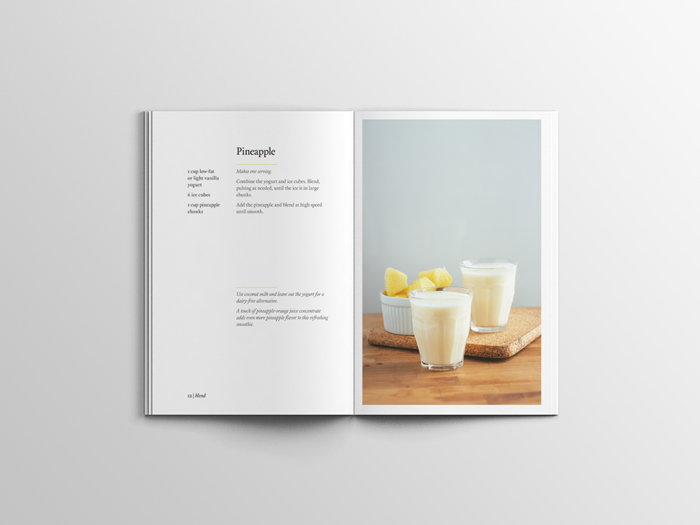
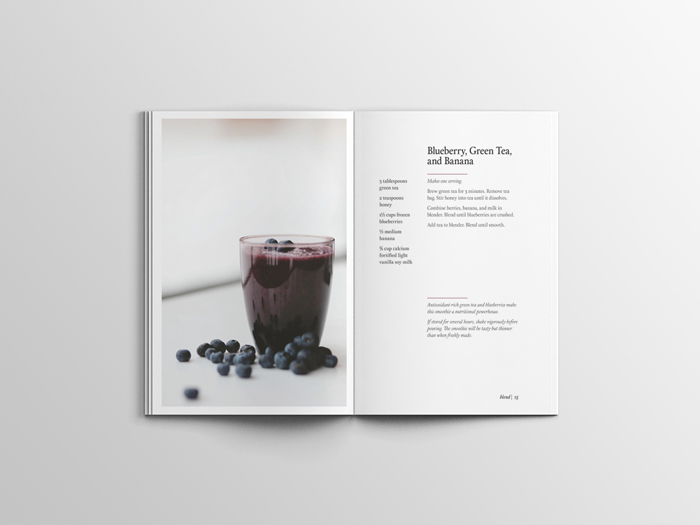
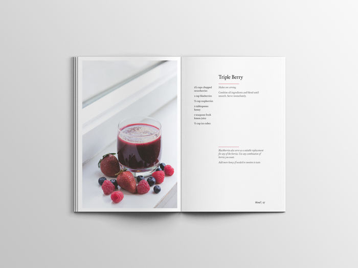
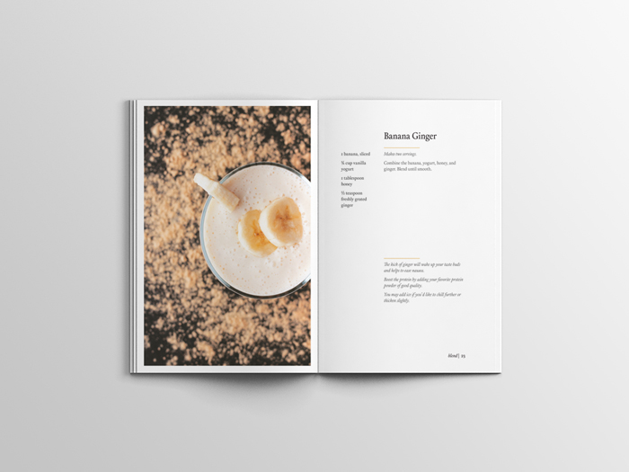
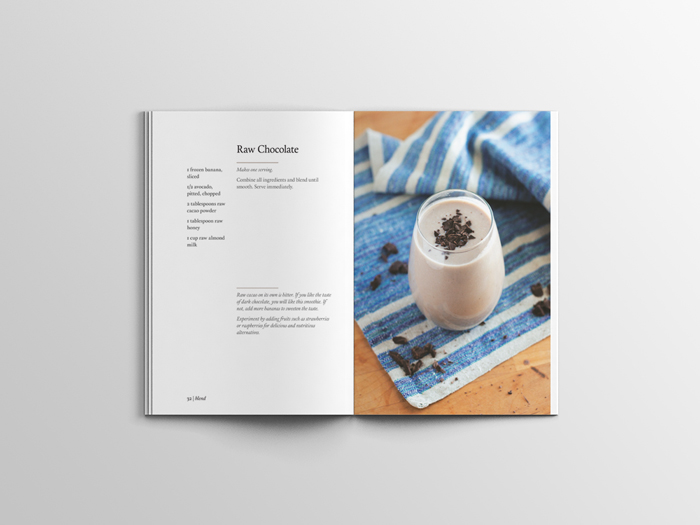
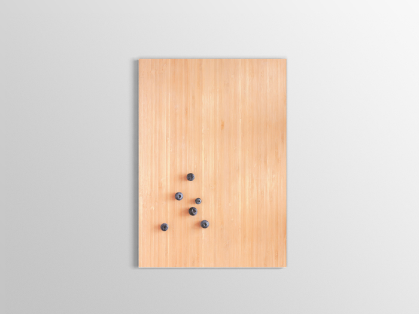
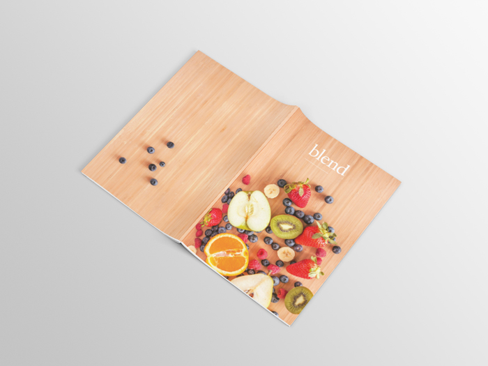
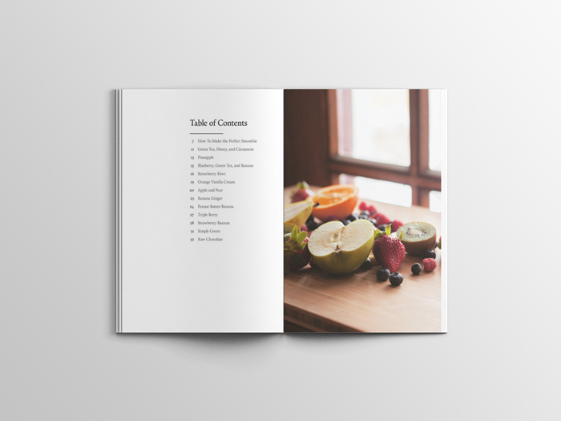
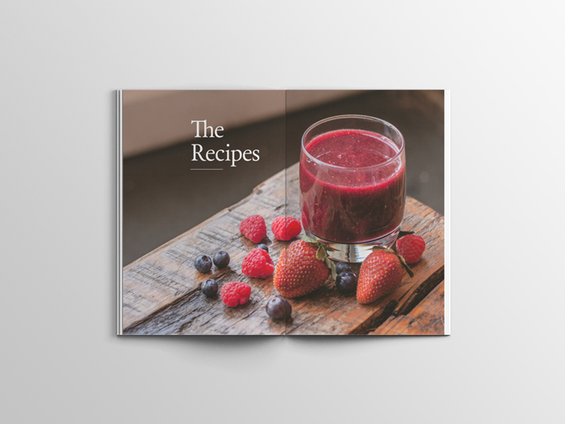
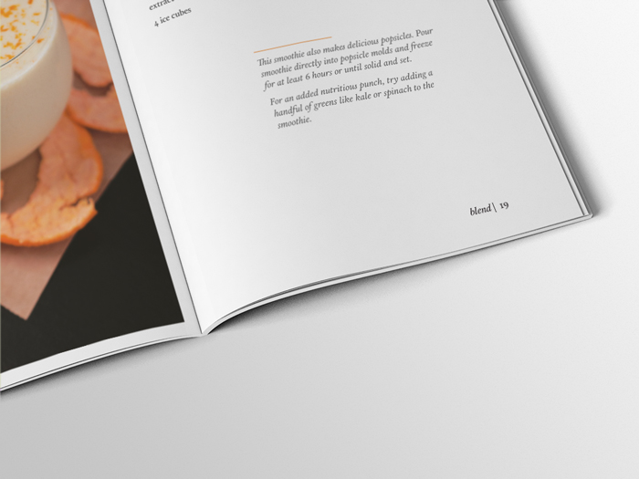
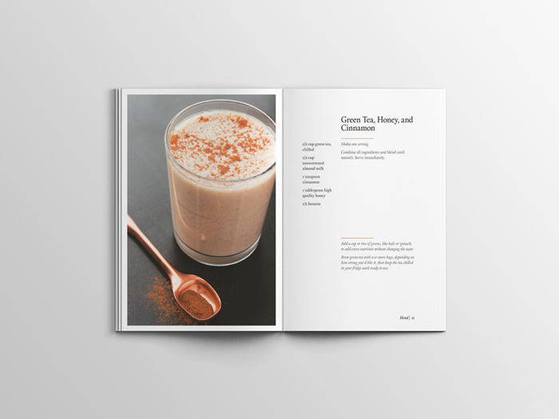
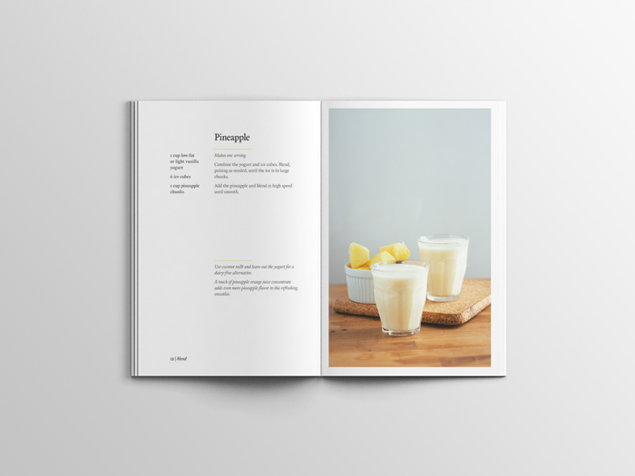
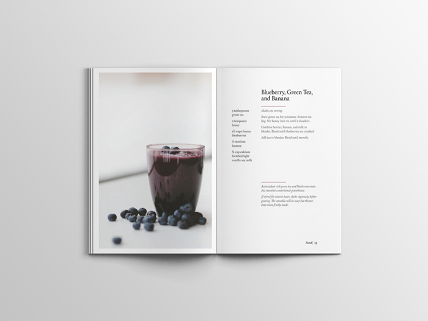
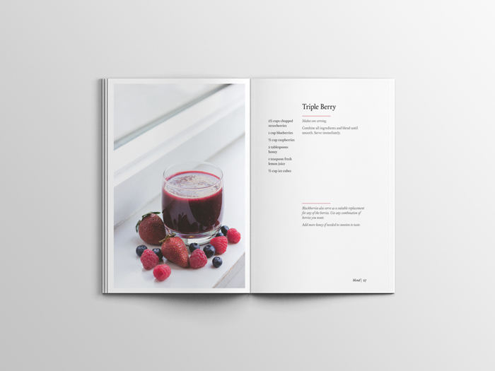
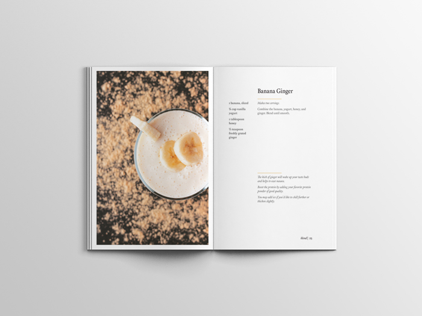
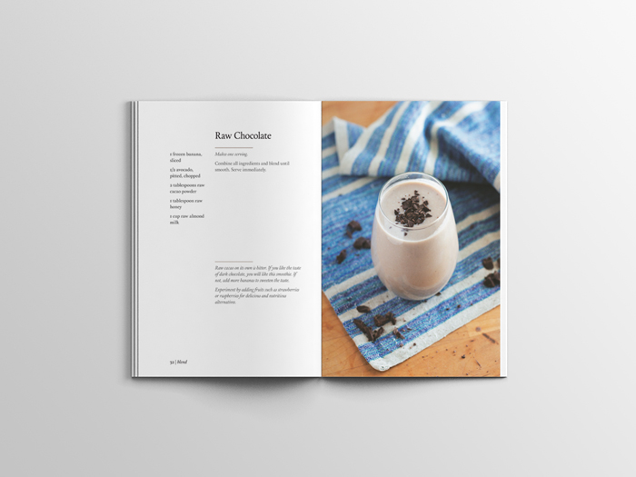
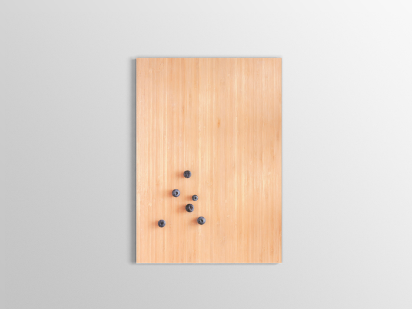